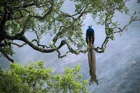
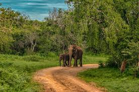

Buddhist Museum & Museum Of Wall Paintings

Even before you begin the steep ascent for reaching the Dambulla rock temple, you will be awed by the sight of a huge golden Buddha statue that marks the entrance to the Dambulla Museum. This majestic sculpture is considered to be Asias largest Buddha statue in the Dhyan Chakra mudra. To its right is a row of monk sculptres shown approaching the enlightened one with offerings. The path leads up to a terrace where you can spend some quiet moments in Budhhas serene presence. You can take a quick walk through the museum, which is free of charge. There is also a small museum of wall art for those interested in Sri Lankan art.
Sinharaja Forest Reserve
Sinharaja Forest Reserve is a biodiversity hotspot in the Ratnapura region. It is a National Park, which is considered as a world heritage site by UNESCO. It is a great part of eco-tourism in Sri Lanka. Sinharaja Forest Reserve has one of the few virgin forests that are left in the world and this site is one of the rarest places comprising of virgin rainforests left till date. With the staggering number of flora and fauna blooming in this place, it can be rightly considered as an ecological treasure trove. You can spot over 130 species of birds and mammals including purple faced langur monkey and giant squirrel etc. there is also a wide array of reptile population and insect species. This place offers the best jungle experience to the visitors and to enjoy the experience to the fullest, you should explore the reserve on your foot.
Udawalawe National Park
Udawalawe National Park, characterized by soaring highlands is one of the worlds best wild elephant habitat. Covered with grasslands and bush forests, this is the best place in Sri Lanka to spot wild elephants. This another major destination for eco-tourism in Sri Lanka. When you visit the park, dont be surprised to a herd of elephants playing, bathing or feeding their young ones. Apart from the elephants you might also spot water buffaloes, monkeys, sambar deers, water monitor lizards as well as leopards. It is also home to many exotic birds. There is a safari, which takes you through the all-round tour of this beautiful, protected wildlife reserve.
Adams Peak

Adams peak is a 7358 feet tall conical mountain, located in Central Sri Lankan region. Though the hike to the summit is quite a long one. It nearly takes two hours of hiking to reach the top of the mountain, but the breathtaking view that greets on the mountain top, is definitely worth the hike. The view of sunrise is astonishingly beautiful from the top of the peak. If you want to catch the sunrise, start early so that you can be at the top when the sun rises. The stairs that lead to the summit are in a fairly good condition, but it becomes steeper gradually as you go through the steep zones of the mountain.
Kitulgala

If you are looking for places to visit near Ratnapura, Kitulgala is the place that you should go. This town in Sri Lanka lies in the wet zone rainforest and experiences two monsoons throughout the year, making it one of the wettest places in Sri Lanka. The place is perfect for those who enjoy adventure sports. Inside the rainforests of Kitulgala, there are many adventure sports opportunities that you can indulge in. Bird watching, white water rafting, stream slides and jungle walks, Kitulgala has all the adventures that you seek.